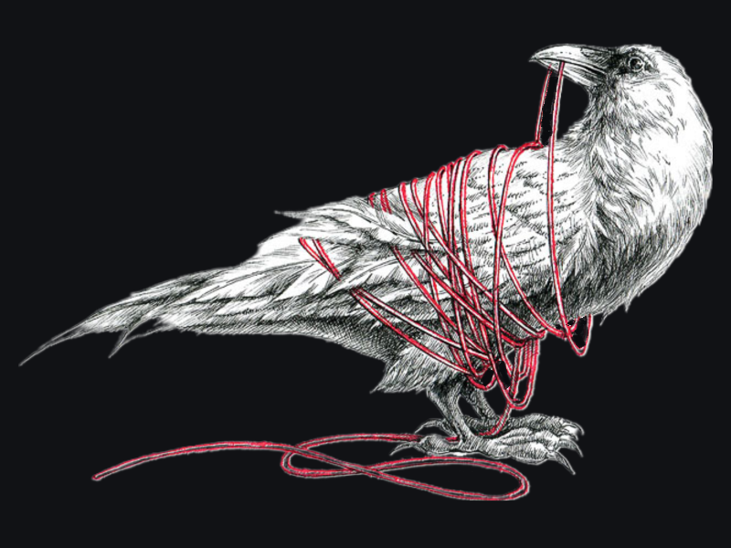

Skills and Hobbies
Professional Chef
Editing and Development
Mountain Biking
I have been a professional chef for over 10 years. Learning and perfecting cuisines has been a passion of mine my whole life. Lately, I have been diving deep into Syrian, Indian, and Szichuan cuisines.
I am a freelance editor for Editor World. I am currently studying modern programming and data management software to redirect my career towards programming and web development.
Vermont has some of the best mountain biking on the East Coast. I hit the trails regularly to keep up my fitness and to practice mindfulness.